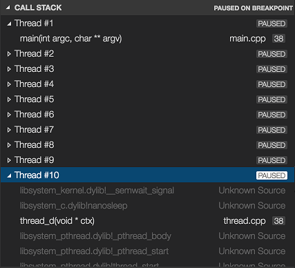

Debug C++ in Visual Studio Code
After you have set up the basics of your debugging environment as specified in the configuration tutorials for each target compiler/platform, you can learn more details about debugging C/C++ in this section.
Visual Studio Code supports the following debuggers for C/C++ depending on the operating system you are using:
- Linux: GDB
- macOS: LLDB or GDB
- Windows: the Visual Studio Windows Debugger or GDB (using Cygwin or MinGW)
Windows debugging with GDB
You can debug Windows applications created using Cygwin or MinGW by using VS Code. To use Cygwin or MinGW debugging features, the debugger path must be set manually in the launch configuration (launch.json). To debug your Cygwin or MinGW application, add the miDebuggerPath property and set its value to the location of the corresponding gdb.exe for your Cygwin or MinGW environment.
For example:
"miDebuggerPath": "c:\\mingw\\bin\\gdb.exe"
Cygwin/MinGW debugging on Windows supports both attach and launch debugging scenarios.
To learn more, see Configuring C/C++ debugging.
If you are debugging with GDB on Windows, see Windows Debugging with MinGW64.
Conditional breakpoints
Conditional breakpoints enable you to break execution on a particular line of code only when the value of the condition is true. To set a conditional breakpoint, right-click on an existing breakpoint and select Edit Breakpoint. This opens a small peek window where you can enter the condition that must evaluate to true in order for the breakpoint to be hit during debugging.

In the editor, conditional breakpoints are indicated by a breakpoint symbol that has a black equals sign inside of it. You can place the cursor over a conditional breakpoint to show its condition.
Function breakpoints
Function breakpoints enable you to break execution at the beginning of a function instead of on a particular line of code. To set a function breakpoint, on the Run view right-click inside the Breakpoints section, then choose Add Function Breakpoint and enter the name of the function on which you want to break execution.
Expression evaluation
VS Code supports expression evaluation in several contexts:
- You can type an expression into the Watch section of the Run view and it will be evaluated each time a breakpoint is hit.
- You can type an expression into the Debug Console and it will be evaluated only once.
- You can evaluate any expression that appears in your code while you're stopped at a breakpoint.
Expressions in the Watch section take effect in the application being debugged; an expression that modifies the value of a variable will modify that variable for the duration of the program.
Multi-threaded debugging
The C/C++ extension for VS Code has the ability to debug multi-threaded programs. All threads and their call stacks appear in the Call Stack section:

Memory dump debugging
The C/C++ extension for VS Code also has the ability to debug memory dumps. To debug a memory dump, open your launch.json file and add the coreDumpPath (for GDB or LLDB) or dumpPath (for the Visual Studio Windows Debugger) property to the C++ Launch configuration, set its value to be a string containing the path to the memory dump. This will even work for x86 programs being debugged on an x64 machine.
Additional symbols
If there are additional directories where the debugger can find symbol files (for example, .pdb files for the Visual Studio Windows Debugger), they can be specified by adding the additionalSOLibSearchPath (for GDB or LLDB) or symbolSearchPath (for the Visual Studio Windows Debugger).
For example:
"additionalSOLibSearchPath": "/path/to/symbols;/another/path/to/symbols"
or
"symbolSearchPath": "C:\\path\\to\\symbols;C:\\another\\path\\to\\symbols"
Locate source files
The source file location can be changed if the source files are not located in the compilation location. This is done by simple replacement pairs added in the sourceFileMap section. The first match in this list will be used.
For example:
"sourceFileMap": {
"/build/gcc-4.8-fNUjSI/gcc-4.8-4.8.4/build/i686-linux-gnu/libstdc++-v3/include/i686-linux-gnu": "/usr/include/i686-linux-gnu/c++/4.8",
"/build/gcc-4.8-fNUjSI/gcc-4.8-4.8.4/build/i686-linux-gnu/libstdc++-v3/include": "/usr/include/c++/4.8"
}
GDB, LLDB, and LLDB-MI Commands (GDB/LLDB)
For the C++ (GDB/LLDB) debugging environment, you can execute GDB, LLDB and LLDB-MI commands directly through the debug console with the -exec command, but be careful, executing commands directly in the debug console is untested and might crash VS Code in some cases.
Other debugging features
- Unconditional breakpoints
- Watch window
- Call stack
- Stepping
For more information on debugging with VS Code, see this introduction to debugging in VS Code.
For additional ways to configure the launch.json file so that you can debug your C/C++ app, see Configuring C/C++ debugging.
Natvis framework
You create custom views of C++ object in the debugger with the Natvis framework. You can read the Custom views for native objects topic for details on using Natvis with the C/C++ extension.
Debug remotely
For information about attaching to a remote process, such as debugging a process in a Docker container, see Pipe transport.
Debug the debugger
If you are experiencing a debugging problem with the extension that we can't diagnose based on information in your issue report, we might ask you to enable logging and send us your logs. See Enable logging for the debug adapter to learn how to get C/C++ extension logs.
Known limitations
Symbols and code navigation
All platforms:
- Because the extension doesn't parse function bodies, Peek Definition and Go to Definition don't work for symbols defined inside the body of a function.
Debugging
Windows:
- GDB on Cygwin and MinGW cannot break a running process. To set a breakpoint when the application is running (not stopped under the debugger), or to pause the application being debugged, press
kbstyle(Ctrl-C)in the application's terminal. - GDB on Cygwin cannot open core dumps.
Linux:
- You may see an error saying:
ptrace: Operation not permitted. This is due to GDB needing elevated permissions in order to attach to a process. This can be solved using the solutions below:When using attach to process, you need to provide your password before the debugging session can begin.
To disable this error temporarily, use the following command:
echo 0 | sudo tee /proc/sys/kernel/yama/ptrace_scopeTo remove the error permanently, add a file called
10-ptrace.confto/etc/sysctl.d/and add the followingkernel.yama.ptrace_scope = 0.
macOS:
- LLDB:
- When debugging with LLDB, if the Terminal window is closed while in break mode, debugging does not stop. Debugging can be stopped by pressing the Stop button.
- When debugging is stopped the Terminal window is not closed.
- GDB:
- Additional manual install steps are required to use GDB on macOS. See Manual Installation of GDB for OS X in the README.
- When attaching to a process with GDB, the application being debugged cannot be interrupted. GDB will only bind breakpoints set while the application is not running (either before attaching to the application, or while the application is in a stopped state). This is due to a bug in GDB.
- Core dumps cannot be loaded when debugging with GDB because GDB does not support the core dump format used in macOS.
- When attached to a process with GDB, break-all will end the process.
Next steps
Read on to find out about:
- Configure VS Code for Windows Subsystem for Linux
- Configure VS Code for Mingw-w64 and GCC
- Configure VS Code for macOS
- Configure C/C++ debugging - Learn about additional debugger configuration options.
- Basic Editing - Learn about the powerful Visual Studio Code editor.
- Code Navigation - Move quickly through your source code.
- Tasks - use tasks to build your project and more.
- Debugging - find out about the Visual Studio Code debugger.
If you have any other questions or run into any issues, please file an issue on GitHub.